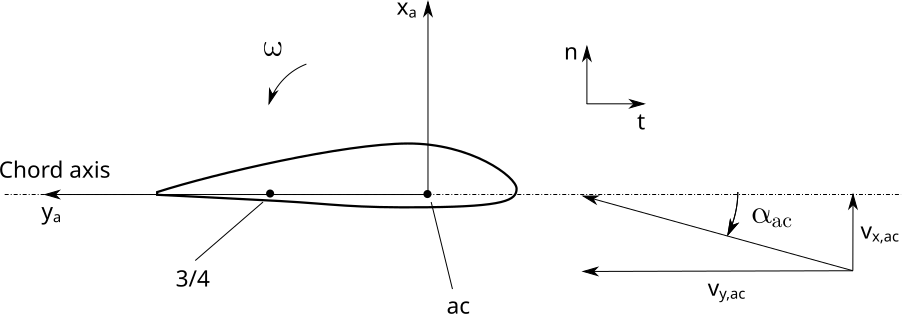

4.3.8. 비정상 공력
비정상 공기역학(UA) 모델은 비정상 부착 흐름, 뒷전 흐름 분리, 동적 실속 및 흐름 재부착을 포함한 흐름 히스테리시스를 설명합니다. 동적 실속 실속 현상을 유발하거나 지연시킬 수 있는 급격한 공기역학적 변화를 말합니다. [ad-Bra17]. 풍속의 급격한 변화(예: 블레이드가 타워 그림자를 통과할 때)는 에어포일을 따라 공기 흐름이 갑자기 분리되었다가 다시 부착되는 원인이 됩니다. 블레이드 표면에서의 이러한 효과는 정상 상태 공기 역학으로는 예측할 수 없지만 블레이드가 타워 그림자를 만날 때뿐만 아니라 기울어진 흐름 및 난류 조건에서 작동하는 동안에도 터빈 작동에 영향을 미칠 수 있습니다. 동적 실속 효과는 블레이드의 상대풍이 블레이드 코드를 가로지르는 시간 순서의 시간 척도에서 발생합니다. \(c/\Omega r\). 대형 풍력 터빈의 경우 이는 다음과 같을 수 있습니다. \(0.5\) 블레이드 루트에서 초 \(0.001\) 칼날 끝에서 초. 동적 실속은 풍속이 증가함에 따라 높은 과도 힘을 초래할 수 있지만 실속은 지연됩니다.
4.3.8.1. 이론
AeroDyn에 구현된 다양한 동적 실속 모델이 아래에 나와 있습니다.
4.3.8.1.1. 표기법 및 정의
다음을 참조: 섹션 4.3.3.19.1 프로필 입력 파일에 있는 모든 입력에 대한 포괄적인 설명(아래 반복된 입력 중 일부 포함)
익형 단면 좌표계와 주요 변수는 다음과 같습니다. 그림 4.9 아래에 추가로 설명되어 있습니다.


그림 4.9 비정상 공기역학 모듈에 사용되는 익포일 단면 좌표계 정의
공기역학적 중심(AC): 공기역학적 힘과 모멘트가 작용한다고 가정되는 익형 단면의 지점입니다. 일반적으로 일반 에어포일의 경우 1/4 현 지점에 가깝고 원형 단면의 경우 중앙에 가깝습니다.
"3/4" 현 지점: 원래 공식에서 이 지점은 리딩 에지 뒤에 3/4 현 뒤에 위치한 현 축의 지점을 나타냅니다. 이 개념은 여기서 1/4 현 지점과 크게 다른 공기 역학적 중심 위치를 설명하기 위해 공기 역학적 중심과 뒷전 사이의 중간에 위치한 지점으로 일반화되었습니다. 표기법 \(3/4\) 이 문서에 보관되어 있습니다.
\(\omega\): 익형 부분의 회전 속도(피칭/비틀림 속도)는 z 주변에서 양수입니다.
\(\boldsymbol{v}_{ac}\): 공기역학적 중심에서의 속도 벡터 \(\boldsymbol{v}_{ac}=[v_{x,ac}, v_{y,ac}]\) (익형 단면 좌표계로 표현된다고 가정한 좌표)
\(\boldsymbol{v}_{34}\): 3/4 코드 지점의 속도 벡터 \(\boldsymbol{v}_{34}=[v_{x,34}, v_{y,34}]\)(익형 단면 좌표계로 표현되는 것으로 가정된 좌표) 속도는 1/4 현 지점의 속도와 단면의 회전 속도로부터 구해집니다. \(\boldsymbol{v}_{34}=\boldsymbol{v}_{ac}+\omega d_{34} \hat{\boldsymbol{x}}_s\) 여기서 \(d_{34}\) 공기 역학적 중심과 3/4 코드 지점 사이의 거리입니다.
\(U_{ac}\): 공기역학적 중심에서의 속도 표준. \(U_{ac}=\lVert\boldsymbol{v}_{ac}\rVert=\sqrt{v_{x,ac}^2 + v_{y,ac}^2}\)
\(\alpha_{ac}\): 공기역학적 중심에서의 받음각 \(\alpha_{ac}=\operatorname{atan2}(v_{x,ac},v_{y,ac})\)
\(\alpha_{34}\): 3/4 코드 지점에서의 받음각 \(\alpha_{34}=\operatorname{atan2}(v_{x,34},v_{y,34})\)
\(\boldsymbol{x}\): 연속 공식에 사용되는 상태 벡터
\(c\): 에어포일 코드
\(C_l^{st}, C_d^{st}, C_m^{st}\): 정적 익형 계수
\(\alpha_0\): 제로 리프트에서의 받음각, \(C_l^{st}(\alpha_0)=0\)
\(\alpha_1\): 포지티브 실속에 가까운 받음각.
\(\alpha_2\): 네거티브 실속에 가까운 받음각.
\(C_{l,\alpha}\): 정상 양력 곡선의 기울기 \(\alpha_0\).
\(f^{st}_s(\alpha)\): 양력 곡선으로부터 결정되는 정상 분리 함수입니다. \(C_l^{st}(\alpha)\) (아래 참조, 예: [ad-HGAM04])
\(A_1\), \(A_2\), \(b_1\), \(b_2\): 후류 와도 전파의 특징인 4개의 상수(바그너 상수)
시간 상수:
\(T_u(t) = \frac{c}{2U_{ac}(t)} \in [0.001, 50]\): 흐름이 익형 단면의 절반을 넘는 시간. 비물리적 값을 피하기 위해 값은 정체됩니다.
\(T_{f,0}\): 앞전 분리와 관련된 무차원 시상수. 기본값은 3입니다.
\(T_{p,0}\): 경계층의 앞 가장자리 압력 구배에 대한 무차원 시상수입니다. 기본값은 1.7입니다.
분리 기능:
꾸준한 분리 기능, \(f_s^{st}\)는 잠재적인 키르히호프 흐름에 대한 평판 위의 분리점으로 정의됩니다. [ad-HGAM04]:
다음의 경우 \(\alpha=\alpha_0\), \(f_s^{st}(\alpha_0)=1\). 멀리 떨어져 \(\alpha_0\), 기능은 점차적으로 다음으로 떨어집니다. \(0\). 함수에 도달하자마자 \(0\) 다음의 양쪽에 \(\alpha_0\), 그 다음에 \(f_s^{st}\) 일정한 값으로 유지됩니다 \(0\).
UAMod=5의 경우 다른 분리 기능이 형성됩니다.
우리는 \(C_n\) 기능, cn_offset, 어디
\(C_{n,offset}=\frac{C_n\left(\alpha^{Lower}\right)+C_n\left(\alpha^{Upper}\right)}{2}\). 그러면 분리 함수는 다음 방정식으로 주어진 0과 1 사이의 값입니다.
완전 부착된 \(C_n\) 곡선은 다음과 같이 정의됩니다. \(C_n\) ~ 사이 \(alpha^{Lower}\) 및 \(alpha^{Upper}\) 해당 범위 밖의 선형 함수:
숫자 문제를 방지하려면 \(\pm180\) 각도 경계, 이 함수는 분리 함수가 0 이상일 때 기울기를 변경합니다. \(alpha^{Upper}\) 그리고 아래 \(alpha^{Lower}\). 이를 통해 완전히 부착된 선형 섹션이 주기적이 되고 큰 크기의 받음각으로 인한 수치 문제를 피할 수 있습니다.
비점성 및 완전히 분리된 리프트 계수:
비점성 양력 계수는 다음과 같습니다. \(C_{l,\text{inv}}= C_{l,\alpha} (\alpha-\alpha_0)\). 완전히 분리된 양력 계수는 다양한 방식으로 모델링될 수 있습니다([ad-Bra17]). 대부분의 엔지니어링 모델에서 완전히 분리된 양력 계수의 기울기는 \(\alpha_0\) ~이다 \(C_{l,\alpha}/2\). Unsteady AeroDynamics 하위 모듈에서 완전히 분리된 양력 계수는 다음과 같이 정상 분리 함수에서 파생됩니다.
4.3.8.1.2. Beddoes-Leishman 유형 모델(UAMod=2,3)
Beddoes-Leishman 모델은 부착된 흐름과 후연 실속을 설명합니다. [ad-LB89].
Unsteady Aerodynamic 모듈에는 두 가지 변형이 구현되어 있습니다. 이 두 가지(압축 가능) 모델은 현재 다음 참조 자료에 설명되어 있습니다. [ad-DH19]. 모델이 사용하는 \(C_n\) 및 \(C_c\) 주요 물리량으로. 모델은 이산 상태를 사용하며 선형화와 함께 사용할 수 없습니다.
4.3.8.1.3. Beddoes-Leishman 4상태 모델(UAMod=4)
OpenFAST에 구현된 4가지 상태(비압축성) 동적 실속 모델은 다음에서 설명됩니다. [ad-BJP+22] (모델은 Hansen-Gaunaa-Madsen(HGM)의 원래 공식과 약간 다릅니다. [ad-HGAM04]). 모델은 다음을 사용하여 활성화됩니다. UAMod=4. 모델이 사용하는 \(C_l\) 주요 물리량으로. 모델의 Linearization를 사용할 수 있습니다.
NOTE: 이 모델은 AeroDyn-UA에서 엄격한 적분기가 구현될 때까지 더 작은 시간 단계가 필요할 수 있습니다.
상태 방정식: 모델의 상태 방정식은 다음과 같습니다.
함께
출력 방정식: 불안정한 익형 계수 \(C_{l,\text{dyn}}\), \(C_{d,\text{dyn}}\), \(C_{m,\text{dyn}}\) 다음과 같이 주에서 얻습니다.
와 함께:
4.3.8.1.4. Beddoes-Leishman 5개 상태 모델(UAMod=5)
5개 상태(비압축성) 동적 실속 모델은 Beddoes-Leishman 4개 상태 모델(UAMod=4)과 유사하지만 소용돌이 생성을 나타내기 위해 5번째 상태를 추가합니다. 다음을 사용하여 활성화됩니다. UAMod=5. 모델이 사용하는 \(C_n\) 및 \(C_c\) 주요 물리량으로. 모델의 Linearization를 사용할 수 있습니다.
4.3.8.1.5. 오예 모델(UAMod=6)
Oye의 동적 실속 모델은 다음과 같이 공식화된 단일 상태(연속) 모델입니다. [ad-Oye91] 예를 들어 설명됩니다. ~에 [ad-Bra17]. 모델은 후연 실속을 포착하려고 시도합니다. 모델의 Linearization를 사용할 수 있습니다.
상태 방정식: Oye의 동적 실속 모델은 하나의 상태를 사용합니다. \(\boldsymbol{x}=[f_s]\) 여기서 \(f_s\) 비정상 분리 기능입니다. 상태 방정식은 1차 미분 방정식입니다.
여기서 \(T_f=T_{f,0} T_u\) 는 흐름 분리의 시상수이고 \(f_s^{st}\) 는 다음에 설명된 정상 상태 분리 함수입니다. 섹션 4.3.8.1.1. 가치 \(T_{f,0}\) 일반적으로 6 정도에서 선택됩니다(기본값과 다름). 쉽게 알 수 있는 것은 \(f_s\) 값에 도달 \(f_s^{st}\) 시스템이 안정된 상태에 있을 때(즉, \(\frac{df_s(t)}{dt}=0\)).
출력 방정식: 비정상 양력 계수는 비점성 양력 계수의 선형 조합으로 계산되며, \(C_{l, \text{inv}}\), 완전히 분리된 양력 계수 \(C_{l,\text{fs}}\). 이 두 양력 계수는 일반적으로 표로 작성된 데이터로 제공되는 정상 양력 계수로부터 결정됩니다. \(C_l^{st}(\alpha)\), 여기서 위 첨자는 \(st\) “꾸준함”을 의미합니다. 불안정한 양력 계수는 다음과 같이 모델링됩니다.
여기서 \(\alpha_{34}\) 3/4 코드에서의 순간적인 받음각입니다. \(f_s\) 두 흐름 상황 사이에서 완화 요인으로 작용하는 것으로 보입니다.
4.3.8.1.6. Boeing-Vertol 모델(UAMod=7)
Boeing-Vertol은 다음 논문에 언급되어 있습니다. [ad-MB11]. 모델의 세부 사항은 이 참조에서 생략되었으므로 여기에 제시된 문서는 AeroDyn의 유사 동일성으로 재현된 소용돌이 코드 CACTUS에서 수행된 구현에서 영감을 얻었습니다. 이 모델에서는 Linearization가 불가능합니다.
에 제시된 모델 [ad-MB11] 준정상 받음각과 받음각의 변화율을 사용하여 동적 받음각이 결정되는 출력 전용 모델입니다.
여기서 \(k_1\) 및 \(\gamma\) 모델의 상수입니다. 실제로 구현은 양력 및 항력 계수, 음수 및 양수 실속에 따라 다릅니다. 모델에는 받음각의 변화율을 계산하기 위한 이산 상태가 필요하고, 모델이 활성화되었는지 여부를 추적하기 위해 두 가지 이산 상태가 필요합니다.
에어포일 상수:
상수 \(k_1\), 공격 각도의 양수 및 음수 비율에 대해 다음과 같이 설정됩니다.
전환 영역의 범위는 다음과 같이 계산됩니다.
여기서 \(\alpha_1\) 및 \(\alpha_2\) 는 각각 포지티브 실속과 네거티브 실속에서의 받음각입니다(익형 입력 파일의 값으로 가져옴). 계수 0.9는 유효 공격 각도가 도달하는 것을 방지하는 여유입니다. \(\alpha_0\) 실속 중.
중간 변수:
변수 \(\gamma\) 양력과 항력은 익형의 두께 대 현 비율의 함수로 계산됩니다. \(t_c\) 그리고 마하수 \(M_a\) (현재 구현에서는 0으로 가정):
여기서 \(\delta = 0.06-t_c\).
이산 상태(및 중간 변수) 업데이트:
공격 각도의 변화율은 다음과 같이 계산됩니다.
갑작스러운 점프를 방지하기 위해 추가 상태가 도입되었습니다. \(\dot{\alpha}\), 그 값을 저장하여. 의 분수를 넘어서는 요금 \(\pi \Delta t\) 이전 시간 단계의 값으로 대체됩니다. 이 기능은 CACTUS 구현에는 없습니다.
양력 및 항력에 대한 동적 받음각 오프셋(지연)은 다음과 같이 계산됩니다.
가치 \(k_1\) 다음과 같이 간주됩니다. \(k_{1,n}\) 만약에 \(\dot{\alpha}(\alpha_{34}-\alpha_0)<0\), 그리고 다음과 같이 취해진다. \(k_{1,p}\) 그렇지 않으면. 리프트 앤 드래그의 공격 지연 각도는 다음과 같습니다.
포지티브 및 네거티브 실속까지의 거리는 다음과 같이 계산됩니다. 만약에 \(\dot{\alpha}(\alpha_{34}-\alpha_0)<0\) 동적 실속이 활성화됩니다.
다음의 경우 \(\dot{\alpha}(\alpha_{34}-\alpha_0)<0\) 동적 실속이 활성화되지 않습니다.
다음의 경우 \(\dot{\alpha}(\alpha_{34}-\alpha_0)\ge0\):
양력 계수의 유효 받음각은 지연 받음각으로 간주됩니다.
항력 계수에 대한 유효 받음각은 지연 받음각과 실속 델타로부터 얻습니다.
여기서 \(T=2\Delta\alpha_\text{max}\) "전환" 영역의 범위입니다.
리프트 동적 실속 상태는 다음과 같은 경우에 활성화됩니다. \(\dot{\alpha}(\alpha_{34}-\alpha_0) \ge 0\) 공격 각도가 위에 있으면 \(\alpha_1\) 또는 아래 \(\alpha_2\). 다음과 같은 경우 상태가 꺼집니다. \(\dot{\alpha}(\alpha_{34}-\alpha_0) < 0\) 유효 공격 각도는 다음과 같습니다. \(\alpha_1\) 이상 \(\alpha_2\).
드래그 동적 실속 상태는 아래 조건 중 하나가 참일 경우 활성화됩니다.
그렇지 않으면 상태가 꺼집니다.
출력 계산: 동적 양력 및 항력 계수의 계산은 다음과 같이 수행됩니다.
을 얻기 위해서는 중간변수의 재계산이 필요하다. \(\alpha_{e,L}\) 및 \(\alpha_{e,D}\). 모멘트 계수는 공기역학적 중심과 현 중간("50")의 값을 기준으로 계산됩니다.
여기서 \(\alpha_{50}\) 와 같은 방식으로 계산됩니다. \(\alpha_{34}\) (공기역학적 중심의 속도와 익형의 회전율 사용) 그러나 공기역학적 중심에서 현 중앙까지의 거리를 사용합니다(참조: 섹션 4.3.8.1.1).
4.3.8.2. 입력
다음을 참조: 섹션 4.3.3.10 AeroDyn 기본 파일에 필요한 입력에 대한 설명(예: UAMod)
다음을 참조: 섹션 4.3.3.19.1 프로필 입력 파일에 있는 모든 입력에 대한 보다 포괄적인 설명을 보려면 기본값은 다음에 설명되어 있습니다. 섹션 4.3.8.3
다음을 참조: 섹션 4.3.8.1.1 비정상 공력적 입력과 관련된 표기법 및 정의 목록은 다음과 같습니다.
비정상 공력적 매개변수 중 일부를 포함하는 프로파일 데이터의 예는 여기에서 확인할 수 있습니다.
(here).
비정상 공력적 운전자 입력은 다음 문서에 문서화되어 있습니다. 섹션 4.3.8.6.
4.3.8.3. 기본 에어포일 계수 계산
기본값은 cd0 의 최소값은 \(C_d\) 사이의 곡선 \(\pm20\) 공격 각도.
\(\alpha_{c_{d0}}\) 여기서 공격 각도로 정의됩니다. cd0 발생합니다.
계산 후 cd0, \(C_n\) 곡선은 다음과 같이 계산됩니다.
경사 \(C_n\) 곡선은 다음과 같이 계산됩니다.
\(C_{n,smooth}^{Slope}\) 의 부드러운 버전입니다 \(C_{n}^{Slope}\), 2도 창의 삼중 가중치 커널을 사용하여 계산됩니다.
사용 \(C_{n,smooth}^{Slope}\), alphaUpper 및 alphaLower 계산됩니다 :
alphaUpper 사이의 가장 작은 공격 각도 값입니다. \(\alpha_{c_{d0}}\) 그리고 20도에서는 \(C_{n,smooth}^{Slope}\) 곡선이 최대 기울기의 90%까지 감소하기 시작했습니다.
alphaLower -20도와 사이의 가장 큰 공격 각도 값입니다. \(\alpha_{c_{d0}}\) 여기서 \(C_{n,smooth}^{Slope}\) 곡선이 최대 기울기의 90%까지 감소하기 시작했습니다.
Cn1 의 가치입니다 \(C_n(\alpha)\) 다음의 최솟값에서 \(\alpha\) 여기서 \(\alpha >= \alpha^{Upper}\) 그리고 분리 기능, \(f_{st}(\alpha)\) = 0.7.
Cn2 의 가치입니다 \(C_n(\alpha)\) 가장 큰 값으로 \(\alpha\) 여기서 \(\alpha <= \alpha^{Lower}\) 그리고 분리 기능, \(f_{st}(\alpha)\) = 0.7.
Cn_offset 의 평균값이다 \(C_n\) 곡선 alphaUpper 및 alphaLower:
C_nalpha 는 평활화의 최대 기울기로 정의됩니다. \(C_n\) 곡선, \(C_{n,smooth}^{Slope}\) ~ 사이 \(\pm20\) 공격 각도.
C_lalpha (평탄화되지 않은)의 최대 기울기로 정의됩니다. \(C_l\) 곡선, \(C_{l}^{Slope}\) ~ 사이 \(\pm20\) 공격 각도.
기본값 alpha0 기울기가 다음과 같은 선의 영교차로 계산됩니다. C_lalpha 다음을 통과하는 \(C_l\) 곡선 \(\alpha = \frac{\alpha^{Upper} + \alpha^{Lower}}{2}\)
Cm0 의 가치는 \(C_m\) 곡선 alpha0: \(C_{m,0} = C_m\left(\alpha_0\right)\). 만약 \(C_m\) 극값은 포함되지 않았습니다. \(C_{m,0} =0\).
alpha1 위의 공격 각도입니다 alphaUpper 여기서 분리 기능은, \(f_s^{st}\) 0.7이다.
alpha2 아래는 공격 각도입니다 alphaLower 여기서 분리 기능은, \(f_s^{st}\) 0.7이다.
Cn1 의 가치는 \(C_n\) 곡선 alpha1.
Cn2 의 가치는 \(C_n\) 곡선 alpha2.
4.3.8.4. 출력
동적 실속 모델의 변수 출력이 가능하지만 전처리기 변수 설정이 필요합니다. UA_OUTS 프로그램(OpenFAST, AeroDyn 드라이버 또는 Unsteady Aero 드라이버)을 다시 컴파일하세요. 출력은 확장자를 가진 출력 파일에 기록됩니다. *.UA.out. 다음을 사용하여 이러한 출력을 활성화하려면 cmake, 다음을 사용하여 컴파일 -DCMAKE_Fortran_FLAGS="-DUA_OUTS=ON"
드라이버를 사용할 때 이 전처리기 변수를 사용할 필요가 없습니다.
4.3.8.5. 2D 단면의 공탄성 시뮬레이션
단순화된 맥락에서 비정상 공기 역학 모델을 사용하기 위해 드라이버를 사용하여 격리된 2D 단면의 공탄성 시뮬레이션이 가능합니다. 보다 섹션 4.3.8.6. 공탄성 시뮬레이션에 대한 이론과 설명은 다음에서 찾을 수 있습니다. [ad-BJJonkmanJ+24].
4.3.8.6. 운전사
단일 익형에 대한 시뮬레이션을 실행하는 데 드라이버를 사용할 수 있습니다.
다양한 종류의 시뮬레이션이 가능합니다:
공격 각도의 정현파 변화를 사용하여,
사용자가 정의한 공격 각도, 상대 풍속 및 피치 속도의 시계열.
풍속의 시계열을 규정하거나 단면의 움직임을 규정할 수 있는 2D 평면(플랩, 모서리 및 비틀림)에서 단면의 탄성 운동에 대해 3 자유도를 갖춘 공기 탄성 시뮬레이션입니다.
공탄성 시뮬레이션에 대한 이론과 설명은 다음에서 찾을 수 있습니다. [ad-BJJonkmanJ+24].
4.3.8.6.1. 편집
사용 cmake, 드라이버는 다음을 사용하여 컴파일됩니다. unsteadyaero_driver를 만드세요, 결과적으로 실행 파일로 생성됩니다. 에어로딘 접는 사람.
4.3.8.6.2. 드라이버 입력
비정상 공력적 드라이버에 대한 입력 파일의 예는 다음에서 찾을 수 있습니다. r-테스트 저장소.
다양한 입력은 아래에 설명되어 있습니다.
환경 조건
FldDens: 작동유체의 밀도(kg/m^3)
KinVisc: 작동유체의 동점도(m^2/s)
SpdSound: 작동유체의 음속(m/s)
비정상 공력 옵션
UAMod : 비정상 에어로 모델 스위치(스위치) {2=B-L Gonzalez, 3=B-L Minnema/Pierce, 4=B-L HGM 4-states, 5=B-L 5-states, 6=Oye, 7=Boeing-Vertol} [AFAeroMod=2인 경우에만 사용]
FLookup : f'에 대한 조회를 계산할지(TRUE) 또는 최적 지수 방정식을 사용할지(FALSE) 여부를 나타내는 플래그입니다. FALSE S1-S4가 에어포일 입력 파일(플래그)에 제공되어야 하는 경우 [AFAeroMod=2인 경우에만 사용됨]
에어포일 속성
AirFoil: 에어포일 표(1열: 받음각(AoA), 2열: 양력계수, 3열: 항력계수).
Chord : 코드 길이(m)
Vec_AQ : 익형 좌표와 현 길이에서 참조점 "A"에서 공기역학적 중심(~쿼드 코드) "Q"까지의 벡터입니다. "A"가 중간 코드에 있는 경우 값은 (0, -0.25) (-)일 가능성이 높습니다.
Vec_AT : 익형 좌표 및 현 길이에서 기준점 "A"에서 3/4현 지점 "T"까지의 벡터입니다. "A"가 중간 코드 값인 경우 (0, 0.25) (-)
UseCm : 익형 테이블의 Cm(모멘트 계수) 데이터를 사용합니다. {true/false}
시뮬레이션 제어
SimMod: 시뮬레이션 모델 {1=주파수 감소 모델, 2=규정된 항공 시계열, 3=탄성 단면}
주파수 감소 시뮬레이션 (SimMod=1)
InflowVel : 유입속도(m/s)
NCycles : 시뮬레이션 길이에 따른 받음각 진동 수(-)
StepsPerCycle : 사이클당 시간 단계 수(-)
Frequency : 익형 진동의 주파수(Hz)
Amplitude : 받음각 진동의 진폭(deg)
Mean : 주기평균(deg)
Phase : 초기 단계(num 단계).
규정된 공기역학적 시뮬레이션 입력 (SimMod=2)
TMax_PA : 총 실행 시간(초)
DT_PA : 권장 모듈 시간 단계(초)
AeroTSFile: 헤더 라인 1개, 열 4개로 구분된 입력 파일(예: csv)의 시계열 데이터: 시간(s), 받음각(deg), InflowVel(m/s), 피치 속도(rad/s)
공탄성 시뮬레이션 (SimMod=3)
공탄성 시뮬레이션에 대한 이론은 다음에서 찾을 수 있습니다. 섹션 4.3.8.5.
TMax : 총 실행 시간(초)
DT : 시간 단계.
ActiveDOF : 활성화된 자유도 목록(참 또는 거짓)
InitPos : 탄성 자유도(m, m, rad)에 대한 초기 위치 목록
InitVel : 탄성자유도(m/s, m/s, rad/s)에 대한 초기속도 목록
GFScalingL1 : 단면 하중을 일반 하중(3x3)으로 변환하기 위한 일반 힘 스케일링 계수입니다. 한 줄에 세 개의 값이 있습니다.
MassMatrixL1 : 질량 행렬(3x3). 한 줄에 세 개의 값이 있습니다.
DampMatrixL1 : 감쇠 매트릭스(3x3). 한 줄에 세 개의 값이 있습니다.
StifMatrixL1 : 강성 매트릭스(3x3). 한 줄에 세 개의 값이 있습니다.
Twist : 비틀림 자유도가 0(deg)일 때 단면의 비틀림을 고정합니다.
InflowMod : 유입 속도에 대한 모델입니다. {1: 등속, 2: 시계열}
Inflow : x, y 방향의 유입 속도 [InflowMod=1인 경우에만 사용]
InflowTSFile : 유입 속도에 대한 입력 파일입니다. 헤더 줄 1개, 열 3개(시간(초), Ux(m/s), Uy(m/s))가 있는 구분된 파일(예: csv)입니다. [InflowMod=2인 경우에만 사용]
MotionMod : 자유도 운동에 대한 모델 {1: 동적, 2: 규정}
MotionTSFile : 지정된 동작에 대한 입력 파일입니다. 헤더 줄 1개, 열 10개(시간(s), x(m), y(m), th(rad), 속도, 가속도)가 포함된 구분된 파일(예: csv)입니다. [InflowMod=2인 경우에만 사용]
출력 제어
SumPrint : 비정상 공기역학 요약 파일 작성(플래그)
WrAFITables : 내부적으로 사용되는 공기역학적 계수를 다시 작성합니다(플래그).
CSV 입력 파일 예시
불안정한 aerodyn 드라이버는 이제 입력 시계열에 대해 CSV 파일을 사용합니다. 시간 열은 일정한 시간 단계에 있을 필요는 없지만 단조롭게 증가해야 합니다.
규정된 에어로 입력(SimMod=2):
유입 파일 입력(SimMod=3, InflowMod=2):
모션 파일 입력(SimMod=3, MotionMod=2) (이 더미 예시에서는 속도와 가속도가 제공되지 않았지만 가급적 제공되어야 합니다):